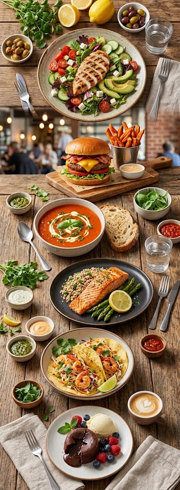
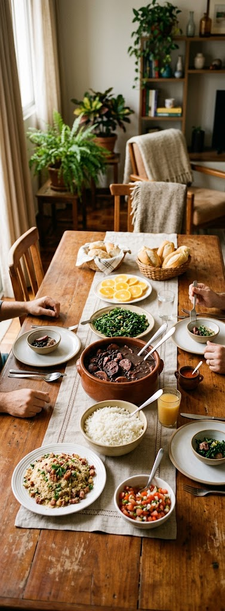
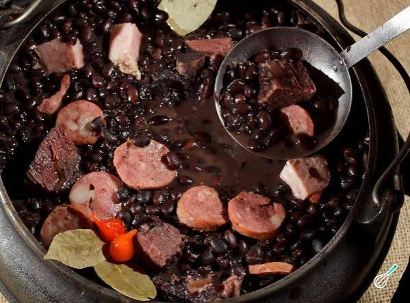
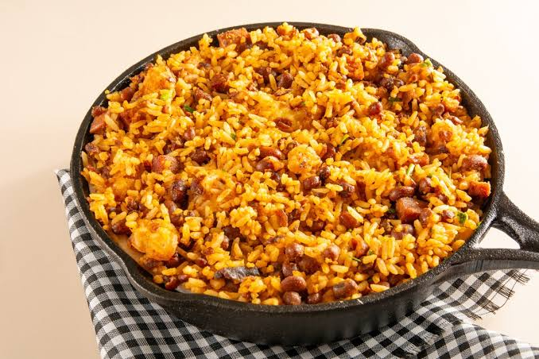

Feijoada

Feijoada
Uma feijoada completa, digna de restaurante, mas feita em casa, com os pertences que você preferir! Na receita tem a nossa sugestão de combinação, mas no fim tem proporção para você escolher. O passo a passo bem detalhado garante a feijoada saborosa e nada pesada.
Ela mistura influências indígenas, africanas e portugues. O prato usa feijão-preto e cortes variados de carne de porco.O cozimento lento deixa o caldo grosso e muito saboroso.
Baião de Dois

Baião de Dois
O baião de dois é uma receita tradicional da culinária brasileira que une dois ingredientes clássicos da nossa gastronomia: o feijão com arroz. Esse prato é típico do Nordeste, mas é amado em todo o país! O método de como fazer baião de dois original leva feijão fradinho, arroz, queijo coalho, carne de sol e manteiga de garrafa. Com o passar do tempo, algumas substituições foram sendo feitas para se adequar aos ingredientes disponíveis e ao paladar, mas nem por isso a receita de baião de dois perdeu o seu sabor. O grande segredo do baião de dois é cozinhar o arroz no caldo do cozimento do feijão junto com os outros ingredientes. Assim, ele absorve o sabor de todos, deixando o prato de baião de dois delicioso. Depois de desligar o fogo, você adiciona o queijo fatiado para deixar que o calor da panela o derreta. Veja como fazer baião de dois e capriche na sua próxima refeição!